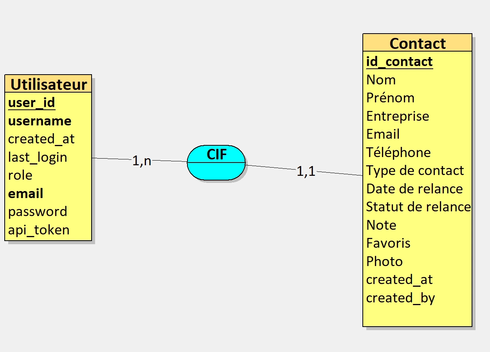
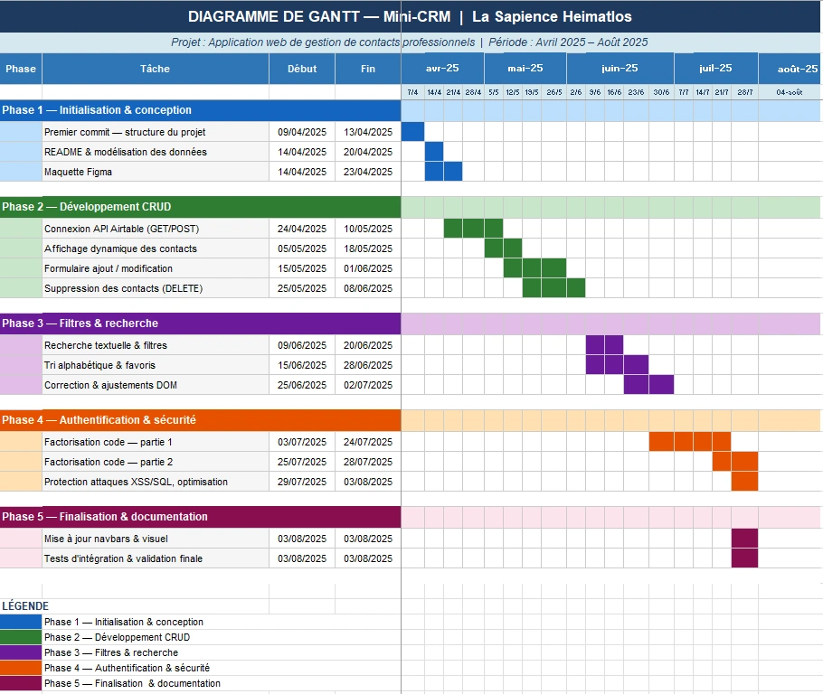

Mini CRM - gestion des contacts
Application web de gestion de contacts professionnels avec authentification et gestion multi-utilisateurs
Le projet Mini-CRM a été développé dans le cadre de ma formation en BTS SIO, option SLAM, à partir d'un cahier des charges fictif établi pour l'association éducative La Sapience Heimatlos. Cette application web vise à répondre aux besoins de l'association en matière de gestion de contacts professionnels.
Elle a été pensée pour les freelances, indépendants et petites structures, et plus particulièrement pour les collaborateurs de l'association (formateurs, coordinateurs, personnels administratifs), afin de leur permettre de gérer leurs contacts de manière centralisée, sécurisée et organisée.
Initialement conçue comme une solution mono-utilisateur, l'application a récemment évolué afin d'intégrer un système d'authentification sécurisé permettant la gestion de plusieurs clients au sein d'une même application.

Chaque utilisateur dispose désormais de son propre espace personnel,
avec des données de contacts strictement isolées. Cette évolution a nécessité
une refonte partielle de la logique applicative, notamment au niveau des appels
API, du filtrage des données et de la gestion des sessions.
Ce projet met en œuvre une architecture 100 % front-end reposant sur HTML,
CSS et JavaScript, tout en s'appuyant sur des services cloud pour le stockage
des données et l'hébergement des images.
-
Marquer les contacts favoris

Le besoin exprimé est celui d'un outil simple, intuitif et sécurisé permettant
à plusieurs utilisateurs de gérer indépendamment leurs contacts professionnels.
Chaque client doit pouvoir créer un compte, se connecter et accéder uniquement
à ses propres données.
Mini-CRM répond à cette problématique en proposant une interface claire et
ergonomique intégrant les fonctionnalités essentielles : ajout, modification,
suppression, recherche multicritère, filtres avancés, classement alphabétique
et gestion des favoris.
L'objectif est de proposer une solution légère mais évolutive, adaptée à un
contexte multi-clients, sans la complexité d'un CRM industriel.
Le projet s'appuie sur un environnement moderne et modulable, combinant plusieurs outils complémentaires :
- ◈ HTML5 / CSS3 / JavaScript - Langages de base pour la structure, le style et la logique applicative.
- ◈ Bootstrap - mise en page responsive et design adaptatif.
- ◈ API Airtable - gestion et stockage distant des données de contact.
- ◈ API Cloudinary - hébergement et gestion des images de profil.
- ◈ Postman - test et validation des requêtes HTTP (GET, POST, PATCH, DELETE).
- ◈ Font Awesome - icônes de navigation et d'interaction.
- ◈ Assistance IA - aide à la rédaction de documentation et à l'optimisation du code.
- ◈ GitHub - gestion de version et hébergement du code source.
- ◈ Système d'authentification - identification des utilisateurs et accès aux données associées.
- ◈ Gestion des sessions utilisateur - association dynamique des contacts à l'utilisateur connecté.
- ◈ Assistance IA - aide ponctuelle à la rédaction de documentation et à l'optimisation du code.
Ces technologies m'ont permis de créer une application fonctionnelle, responsive et maintenable, en respectant les bonnes pratiques du développement web.


L'application est composée de plusieurs pages principales : Accueil, Ajout de contact, Recherche, À propos et Contact.
La structure repose sur une architecture JavaScript modulaire, facilitant la maintenance et l'évolution du code. Les interactions avec la base Airtable se font via des appels API sécurisés :
- ◈ GET pour l'affichage dynamique des contacts,
- ◈ POST pour l'ajout,
- ◈ PATCH pour la modification,
- ◈ DELETE pour la suppression.
Une évolution majeure du projet a consisté à intégrer un système
d'authentification permettant à plusieurs utilisateurs de se connecter
à l'application. Chaque action (affichage, ajout, modification, suppression)
est désormais liée à l'utilisateur authentifié.
Les requêtes API sont filtrées dynamiquement afin de garantir l'isolation
des données entre les clients, renforçant ainsi la sécurité et la
confidentialité des informations.
Une partie du projet a également été pensée pour le déploiement local (SISR), avec la possibilité
d'héberger l'application sur un serveur Apache ou Nginx et de la rendre accessible via une
adresse IP interne.
La maquette Figma a servi de référence pour la conception visuelle : elle présente une interface
cohérente, ergonomique et responsive.
Ce projet a été particulièrement formateur. Il m'a permis de consolider mes compétences en développement front-end (HTML, CSS, JavaScript), en gestion d'API (Airtable, Cloudinary) et en architecture modulaire.
Initialement mené en binôme — avec une répartition des tâches entre le développement (SLAM) et la configuration de l'environnement serveur local (SISR) — j'ai finalement poursuivi et finalisé seule l'ensemble du projet, suite au départ de mon binôme.
Cette expérience m'a aussi appris à travailler en autonomie, à documenter efficacement mon code et à tester mes fonctionnalités à l'aide d'outils comme Postman.
L'intégration de l'authentification et de la gestion multi-clients marque
une étape importante dans l'évolution du projet. Elle m'a permis d'aborder
des problématiques concrètes de sécurité, de filtrage des données et de
gestion des utilisateurs.
Ce projet est désormais pleinement exploitable dans un contexte réel
multi-utilisateurs et constitue une base solide pour de futures évolutions
(gestion des rôles, statistiques, export de données, etc.).
- ◈ Le code source de l'application disponible sur GitHub en cliquant sur ce lien
- ◈ Maquette Figma du projet
- (Cette maquette a connu plusieurs améliorations depuis sa conception.)
- ◈ Documentation technique : fichier README.md disponible sur GitHub
- ◈ Commentaires intégrés dans le code pour faciliter la compréhension
1. Gérer le patrimoine informatique
- 1.1. Recenser et identifier les ressources numériques J'ai identifié les différentes ressources nécessaires au projet (API Airtable, Cloudinary, Bootstrap, Postman, GitHub, système d'authentification et gestion des sessions) afin de structurer l'architecture de l'application.
- 1.5. Gérer des sauvegardes Le projet est sauvegardé régulièrement afin de garantir la sécurité du code et des données. Une copie complète est stockée sur un disque dur externe, en complément du versionnement assuré par Git et de l'hébergement sur GitHub.
Par ailleurs, les données métier peuvent être exportées directement depuis l'interface Airtable au format CSV, ce qui permet de conserver une sauvegarde supplémentaire des contacts sous une forme exploitable et réutilisable. Cette redondance assure la continuité du projet en cas de défaillance matérielle ou logicielle.
2. Répondre aux incidents et aux demandes d'assistance et d'évolution
- 2.1. Collecter, suivre et orienter des demandes Les besoins du projet ont été définis à partir d'un cahier des charges fictif fourni pour l'association La Sapience Heimatlos. Ce document m'a permis d'identifier les fonctionnalités attendues (authentification, gestion des contacts, isolation des données, etc.) et de suivre leur mise en œuvre tout au long du développement. Les demandes ont été analysées, priorisées et traduites en fonctionnalités concrètes afin de répondre au besoin exprimé.
4. Travailler en mode projet
- 4.1. Analyser les objectifs et les modalités d'organisation d'un projet L'analyse du cahier des charges m'a permis de comprendre les objectifs attendus et de planifier les différentes étapes du projet en fonction des contraintes définies.
- 4.2. Planifier les activités La planification du projet a été réalisée à l'aide d'un diagramme de Gantt, permettant d'organiser les différentes phases du développement : initialisation et conception, développement des fonctionnalités CRUD, filtres et recherche, sécurisation, puis finalisation. Cette planification m'a permis de structurer mon travail, de respecter les délais fixés et de suivre l'avancement du projet de manière progressive et cohérente.
5. Mettre à disposition des utilisateurs un service informatique
- 5.1. Réaliser les tests d'intégration et d'acceptation d'un service Tests des endpoints Airtable (GET/POST/PATCH/DELETE) et validation des scénarios utilisateur (connecté / non connecté) afin de garantir l'intégration et la fiabilité du service.
6. Organiser son développement professionnel
- 6.1. Mettre en place son environnement d'apprentissage personnel J'ai utilisé divers outils professionnels pour développer mes compétences : Figma, Bootstrap, Postman, Airtable API, GitHub.